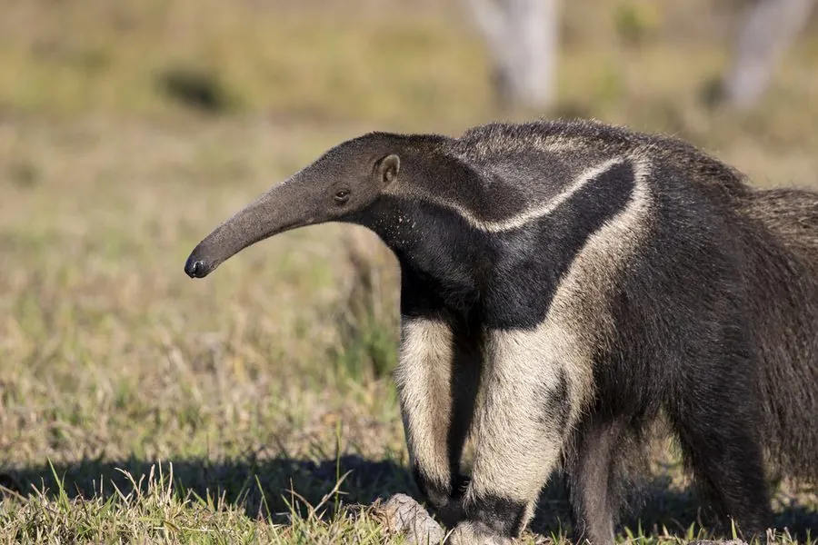

哺乳动物 · 动物界
大食蚁兽 Myrmecophaga tridactyla

中美洲和南美洲的大型食蚁兽，吻部细长、舌头可达 60 厘米，前爪锋利，靠嗅觉寻找蚁巢，走路时前掌背屈着地。
- 分类
- 门脊索动物门纲哺乳纲目披毛目科食蚁兽科属大食蚁兽属
- 栖息环境
- 热带雨林、稀树草原、沼泽与疏林，需有丰富的蚁巢
- 地理分布
- 中美洲和南美洲，从墨西哥南部到阿根廷北部
- 保护级别
- IUCN 易危（VU）
物种志
大食蚁兽体长 1.8–2.2 米（含尾），体重 25–45 kg。它的头部细长呈管状，吻端很小，嘴里没有牙齿；舌头细长可伸到 60 cm，表面覆有黏液；身体覆粗糙长毛，体侧有黑色斜纹，前肢强壮，前爪锋利，尾巴蓬松如帚。
大食蚁兽分布于中美洲和南美洲，从墨西哥南部到阿根廷北部，栖息于热带雨林、稀树草原、沼泽和疏林。它靠嗅觉寻找蚂蚁和白蚁巢，用前爪扒开蚁巢后迅速伸缩长舌舔食昆虫，一天可造访数十个蚁巢，但不会把一个蚁巢吃空。大食蚁兽多为独居，晨昏和夜间活动，走路时前掌背屈着地以保护爪尖，遇险时会用后肢站立、挥动前爪防御。雌兽妊娠期约 190 天，每胎 1 仔，幼仔常骑在母兽背上。由于栖息地丧失和交通事故，大食蚁兽被列为易危。
形态与习性
- 食性蚂蚁和白蚁，一天可造访数十个蚁巢
- 体长1.8–2.2 m（含尾）
- 体重25–45 kg
- 寿命野外约 15–20 年
- 繁殖妊娠期约 190 天，每胎 1 仔
- 舌头可伸到 60 cm，覆有黏液
- 行走前掌背屈着地，以保护爪尖
趣味知识
- 大食蚁兽的舌头可伸出约 60 cm，靠黏液粘住蚂蚁。
- 它走路时前掌背屈着地，以保护挖蚁巢用的锋利爪尖。
- 大食蚁兽一天可造访数十个蚁巢，但不会把一个蚁巢吃空。
- 幼仔常骑在母兽背上，随母亲四处觅食。